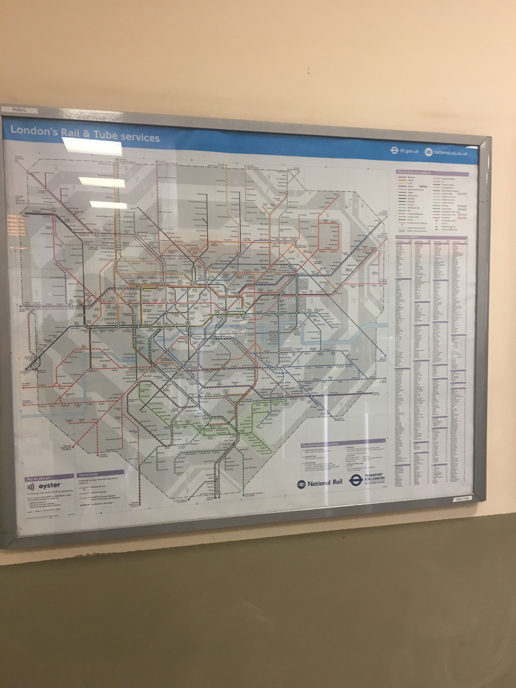

<section class="mbr-section content7 cid-qJKdPUJCIG" id="content7-11">
    <div class="container" id="station-container">
        <div class="container">
            <div class="row justify-content-center content-row">
                <div class="media-container-column title col-12 col-lg-7 col-md-6">
                    <h2 class="align-left mbr-bold mbr-fonts-style display-2">&nbsp;&nbsp;&nbsp;&nbsp;&nbsp;&nbsp;&nbsp;&nbsp;&nbsp;Station</h2>
                </div>
                <div class="media-container-column col-12 col-lg-3 col-md-4">
</div>
            </div>
        </div>
        <div class="media-container-row">
            <div class="col-12 col-md-8">
                <div class="media-container-row">
                    <div class="media-content">
                        <div class="mbr-section-text">
                            <p class="mbr-text align-right mb-0 mbr-fonts-style display-7" style="width:500px;">Kilburn has two main stations but also has another further down the long high road. It has an overground and underground station that sees many people coming in and out of Kilburn. These stations are heavily used for people to get to and from their home/jobs. These stations are old fashioned but look sophisticated and have a very modern interior. The most famous station in Kilburn is the beautiful over-ground located near St. Augustine's High School and the GP. <br> <br> <br> <br>
                            Kilburn High Road is served by many railway lines which traverse the road, binding the area with central London and other parts of London. The railways were first introduced to Kilburn in 1852 when the LNWR opened Kilburn & Maida Vale station. Also, it was further followed by two stations opened in the Brondesbury and area of Kilburn.                                    </p> 
                        </div>
                    </div>
                    <div class="mbr-figure" style="width:200%">
                         
                        <br>
                         
                    </div>
                </div>
            </div>
        </div>
</section>
